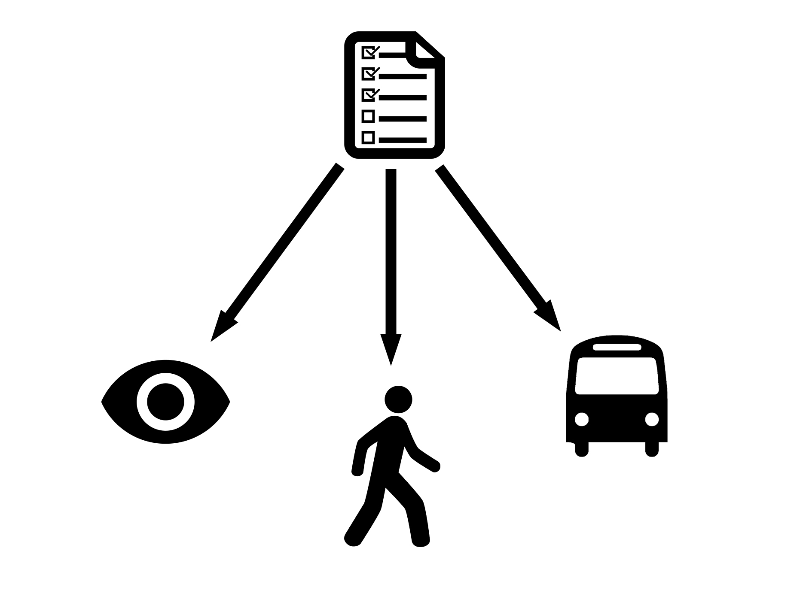
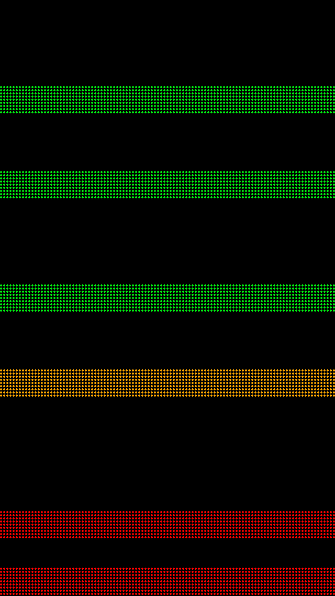
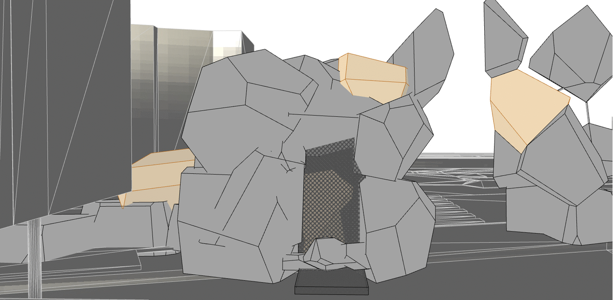
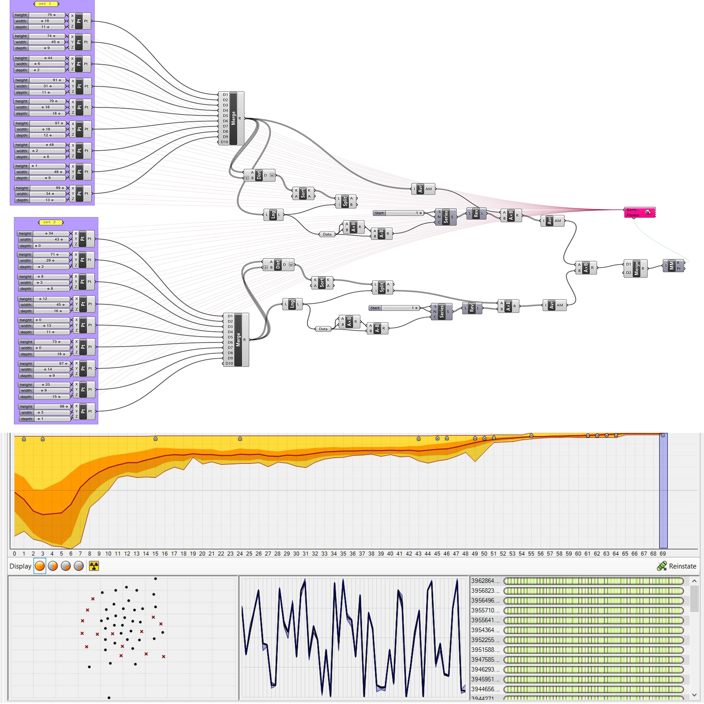
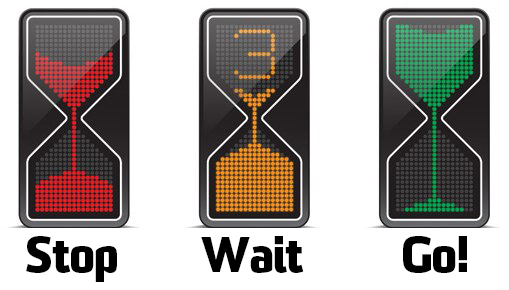
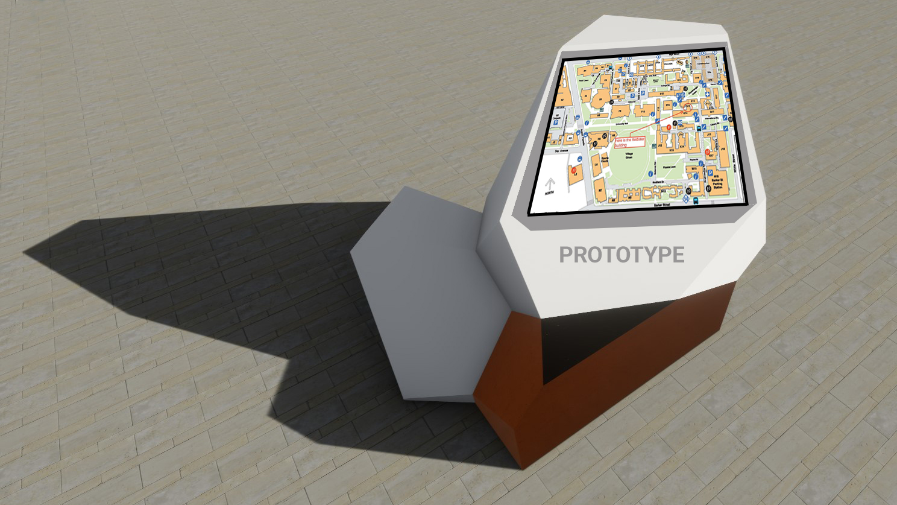

Graphic Automatic Transportation Entrance
We shouldn't go to this slide - instead, we should have the map slide open in the next tab and use ctrl + tab to go to the map,
then do the same thing to get from the map to the next slide. This is to ensure that the speaker notes work (and because the map
can't be embedded)
Objectives
The Viewer
The Pedestrian
The Commuter

Mo stuff
3 design briefs based on this (3 pics, One of nicole's diagram, one of people crossing one of iconic walkway photo)
Maybe some icons + flowchart kind of thing
Preliminary Renders
Design Choice
Material scheme not only matches the new bronze light rail stop, but represents a contrast between new and old.
The scale and grandeur of the design creates a definitive and iconic entrance to the university.
The form compliments the unique shape of the neighbouring Tyree building.
Precedents
The Design



Show a mockup of the bike counter screen? Maybe show it live with the model AND on projector (Would be sick but trek)
Talk about behaviour changing and maybe a bit of social media analysis
Extra features

